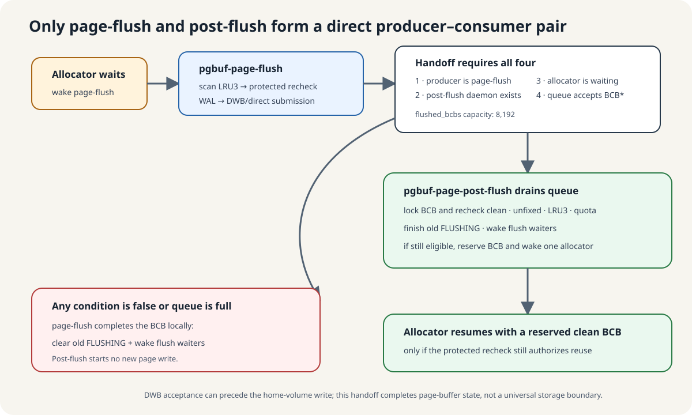

Cleaning supply and completing bookkeeping are different jobs
Return to context B waiting for scan page S3 and dirty candidate S4. Dirty means S4 has changes that must not be discarded when its frame is reused. Page-flush selects suitable cold candidates and submits their contents through the safe write path. Submission does not evict S4 and does not by itself prove that the current frame is reusable or that all persistence work is complete.
After submission, BCB state processing remains. Delegation requires all four conditions: page-flush produced this submission; post-flush exists; a direct-victim allocator is waiting; and flushed_bcbs accepts the BCB pointer. The queue transfers a management-object reference across execution contexts, not page bytes or an irrevocable frame reservation.
Otherwise the submitting path finishes BCB bookkeeping inline and wakes relevant flush waiters. An absent consumer with this inline path is different from stopping a consumer after work has already been queued: queued completion and wakeups can remain pending. Post-flush issues no new page write.
For queued work, the consumer locks the BCB and checks current flags, fixes, LRU3 membership and the private-list quota condition. A currently eligible BCB may be assigned to a live allocator; bookkeeping and flush-waiter wakeup still run if assignment is rejected. A reservation can also be revoked before the allocator's protected receiving check. No universal wakeup or progress guarantee follows.
A BCB pointer arrives after another reader
Constructed schedule: Context B is waiting for a frame for S3. S4's submission succeeded and its BCB pointer entered flushed_bcbs. Before post-flush consumes it, another thread fixes S4 and keeps that use. All other candidate conditions are unchanged. Can the consumer give S4's frame to context B now? Does rejecting assignment also cancel the completion work?
Predict, then reveal the explanation
No immediate assignment: the current fix still protects S4, even though the queue entry is older. Post-flush takes the BCB mutex and rejects the fixed candidate. It still clears the completed flush state and wakes any relevant flush waiters. Context B is an allocator waiter, which is a different role: this event does not promise B a frame. The queue records remaining work, not a reuse certificate.
Handoff stop ends here
Continue to policy maintenance and post-write pacing. Below this boundary, the detailed call paths and write-ordering material remain available for the full curriculum; they are not prerequisites for this session.
Page-flush: the submission call path
This page-flush path selects the non-neighbor, non-DWB write branch. WAL flushing and page submission are ordered sibling operations inside the common flush helper, not a call from the WAL helper to the page writer.
pgbuf_page_flush_daemon_task::execute
→ pgbuf_flush_victim_candidates
→ pgbuf_bcb_flush_with_wal
→ fileio_writeExpand source locations
Source: page_buffer.c:17029–17055 · page_buffer.c:4040–4088 · page_buffer.c:10830–10898
Post-flush: complete work in another execution
A separate consumer execution follows this path only if completion reaches eligible direct-victim assignment.
pgbuf_page_post_flush_execute
→ pgbuf_assign_flushed_pages
→ pgbuf_assign_direct_victimExpand source locations
Source: page_buffer.c:17072–17080 · page_buffer.c:15496–15556
Between them is an asynchronous transfer through flushed_bcbs of a BCB pointer, followed by a wake. It requires the page-flush producer, an existing post-flush daemon, a waiting allocator, and a successful enqueue. A wake is not a nested function call. Enqueue and local fallback.
Timer and frame pressure wake page-flush
The daemon runs periodically and can be woken by frame pressure. Waking does not establish that a page was written; the task checks waiting allocators and current replacement pressure.
Expand implementation details and sources
pgbuf-page-flush pauses for page_bg_flush_interval, 1,000 ms by default. A value of zero means infinite wait until a wake. Allocation/victim pressure wakes it when normal victim search fails, when removing a clean bottom exposes a dirty bottom, or when a selected victim scan finds no reusable BCB.
An observed demand wake forces at least one pgbuf_flush_victim_candidates() call. A timer timeout calls it only while a direct-victim waiter exists or the sampled hit ratio is below 99.9% after enough victim requests. One task execution may loop through several calls while pressure remains; a timed pass can also submit zero pages.
Collect candidates, then check current state and WAL
- Read pressure and compute per-LRU priority plus a scan budget.
- Take one LRU mutex at a time, walk cold LRU3 nodes, and save candidate BCB pointer plus VPID.
- Release LRU locks and optionally sort candidates by VPID for sequentiality.
- For each candidate, lock its BCB and recheck the same VPID, DIRTY, no current FLUSHING, still LRU3, and zero fixes.
- If its WAL boundary is not ready, skip it and wake log-flush. Under allocator pressure, the code can force the needed log boundary once and retry.
- Copy and submit one stable generation through DWB or direct I/O, possibly with neighboring pages.
Candidate-budget calculation
For the 512 MiB/16 KiB example, B=32,768. The default 1% unboosted selection budget is 327 checks; the maximum 10× boost is 3,270, below the 12,800-page 200 MiB cap. These are inspection budgets, not write counts.
The queue carries BCB pointers, not page contents

At this point the stable page generation has crossed the configured DWB/direct-write submission boundary, but its BCB still records the old flush in progress. Clearing that state, waking flush waiters, and perhaps giving the clean frame directly to a waiting allocator are CPU-side bookkeeping. The handoff changes who performs that bookkeeping; it does not repeat the page write.
- What moves: one
PGBUF_BCB *, a pointer to the control record—not the copied page image. - Who receives it: the post-flush daemon through the bounded
flushed_bcbsqueue. - What the receiver does: lock and recheck the current BCB, clear the old
FLUSHINGstate, wake flush waiters, and optionally reserve the clean frame for an allocator. - What never happens here: post-flush starts no new page I/O.
Page-flush delegates only when it produced the submission, post-flush exists, an allocator is waiting, and the 8,192-entry queue accepts the pointer. If any condition fails, page-flush performs the same BCB bookkeeping locally.
With DWB enabled, successful submission can mean “the stable image entered DWB,” before its home-volume write. The handoff therefore marks a page-buffer submission boundary, not universal disk or transaction durability.
State may have changed before post-flush runs
Post-flush drains until the queue is empty. For each pointer it locks the BCB and rechecks zero fixes, LRU3 membership, clean/eligible flags, and—on a private list—quota. The resident page may have been fixed, dirtied again, or heated after submission.
Only an eligible current state may be reserved for one live direct-victim waiter. In every case, post-flush finishes the old FLUSHING generation and wakes the BCB's flush waiters. Consuming work resets its pause to 1 ms; consecutive idle timeouts move through 10 ms and 100 ms, then infinite wake-only sleep.
Who wakes an allocator after a clean unfix?
Consider a constructed schedule: every frame is fixed, an allocator sleeps after its search fails, and readers then release clean pages. Becoming unfixed does not itself guarantee immediate assignment. Ordinary final unfix of an LRU3 page usually boosts it or moves it from private to shared; the released page need not remain a cold candidate.
Unfix can assign directly in specific vacuum-worker or temporary-volume LRU3 paths, and in a VOID vacuum path. Zone adjustment can also assign a different BCB as it falls into LRU3, after eligibility checks and a successful BCB trylock/recheck. These are conditional paths, not a wake on every unfix.
Page-flush can assign an already-clean candidate during its scan. Post-flush, however, consumes the flushed_bcbs queue; it does not search every clean BCB produced by read unfix. A WRITE fix without modification is comparable only if the page was already clean.
Assignment wakes a live allocator but remains revocable. Re-fix can invalidate the reservation without changing VPID; the receiver takes the BCB mutex and rechecks before reuse. The maintenance backup has the existing VS-20 source anomaly, so it is not a guaranteed rescue. This schedule is not a runtime observation or proof of starvation.
Separate search work from I/O waiting
Search work and elapsed time differ. WAL, DWB, file I/O and lock waits affect completion time.
Expand implementation details and sources
| Role | Structural work | Wall-time additions |
|---|---|---|
| Page-flush | O(T + L + K + C log C + C·N) | LRU/BCB contention, WAL, DWB, file I/O, scheduling |
| Post-flush | O(Q + S + F) | queue CAS, BCB/thread mutexes, waking allocators and flush waiters |
T is thread-counter shards, L LRUs, K inspected nodes, C candidates, N neighbor span, Q consumed BCB pointers, S stale allocator wait records, and F flush waiters.
A queued BCB is dirtied again
A submitted page has been queued for post-flush, but another thread dirties it before the consumer runs. Is it automatically available to an allocator?
Explore the explanation
No. The consumer locks and rechecks the current BCB. Finishing the old FLUSHING generation and waking its flush waiters is separate from reserving a currently clean, eligible frame. The queue carries a BCB pointer, not a promise that its state has remained unchanged.